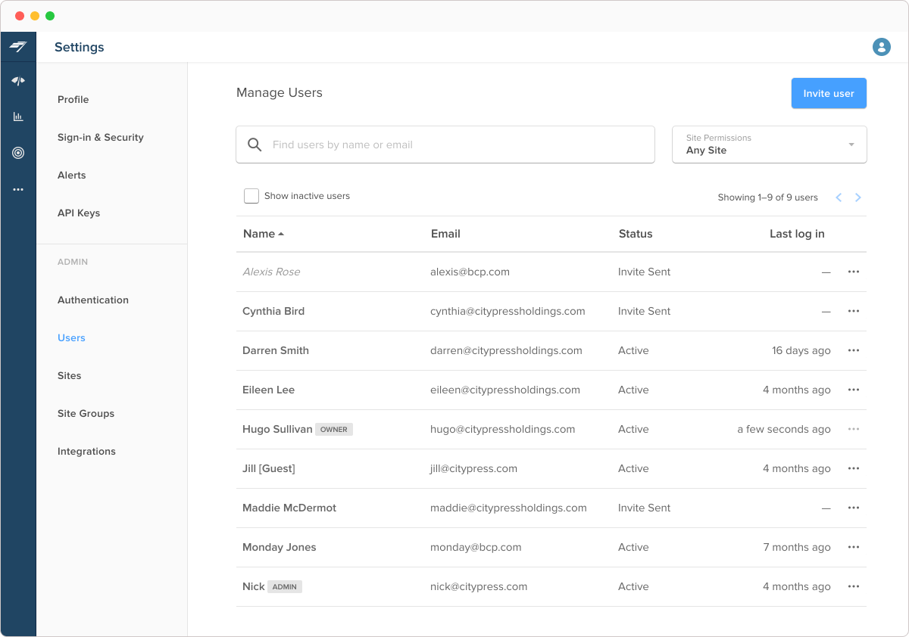
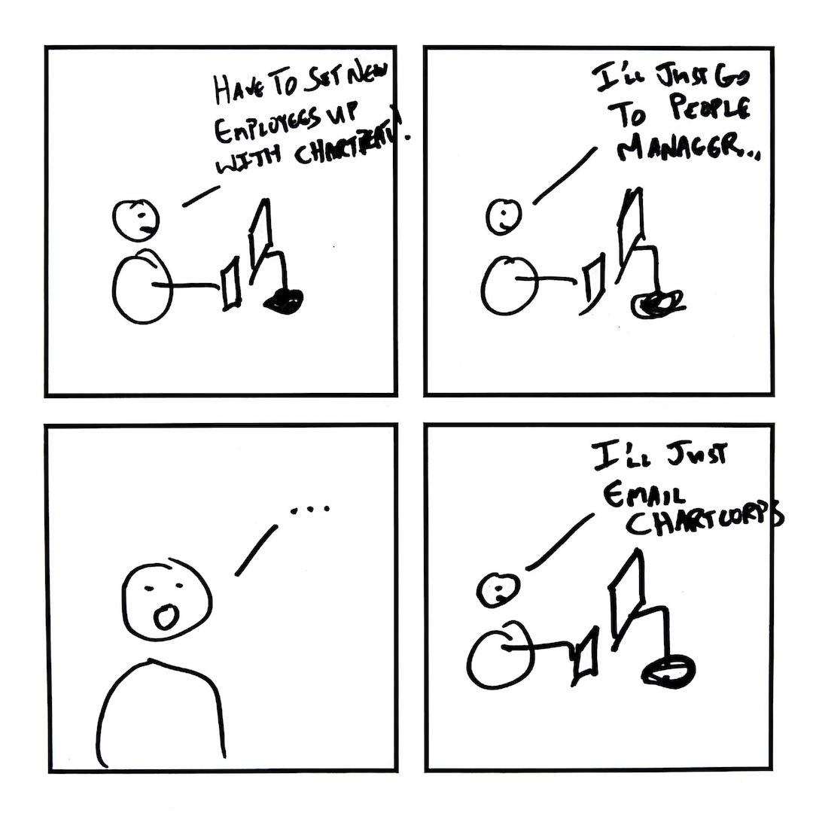
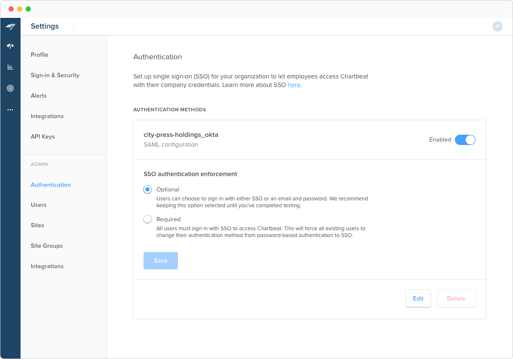
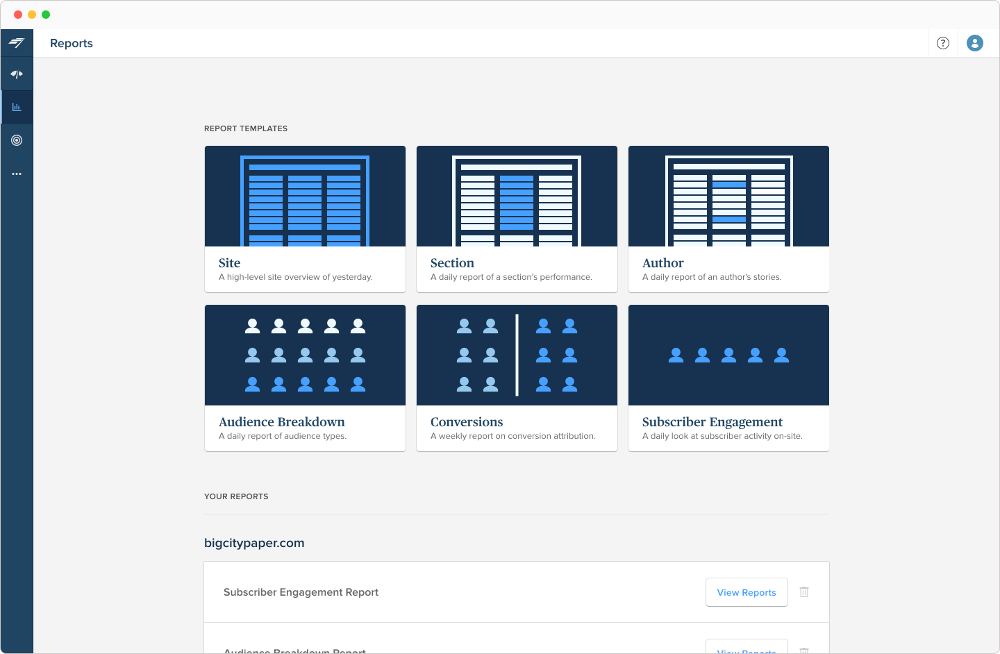
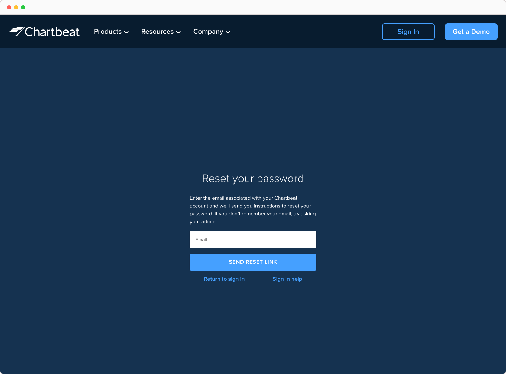

Chartbeat
B2B product design and DEI · Jun 2018 – Apr 2021
Chartbeat is a data platform that empowers media organizations to grow their audience and reader engagement.
Upon joining, I gave user management some much needed TLC, introduced identity management with single sign-on (SSO), and made it easier for our users to find help when they needed it. I later worked on Audience and Subscriber Reports, which taught me the importance of making data accessible and actionable.
Design work aside, I was a founding member of Chartbeat’s Diversity, Equity, and Inclusion (DEI) Committee and cofounder of Freshbeats, a company-wide job shadowing program.
An evergreen user management experience
As Chartbeat’s core product suite evolved with the business, user management tools went overlooked for many years. Over time it became apparent that the dated UX frustrated and overwhelmed both our customers and own employees. I overhauled a needlessly complex, often hands-on procedure into a streamlined experience that encouraged product adoption.
Admins, users responsible for managing their peers' Chartbeat accounts and permissions, faced two main obstacles with the existing system:
- A complicated and cumbersome product
- The inability to provision access to premium tools (e.g., Headline Testing)
These factors hindered onboarding and made admins reluctant to invite new users by themselves — they often resorted to contacting our in-house support team for assistance.

At the start of this project, I facilitated a generative design sketching workshop with a cross-functional group consisting of both customer-facing and product folks. This session gave me much needed context, since I was new to the company, and established a shared understanding of the problem space.
I then referenced design artifacts from said workshop to set up a remote, task-based usability study. In this research study, I asked participants to show me how they might invite new users to Chartbeat by interacting with a clickable prototype in real time.
My research coupled with ongoing stakeholder conversations soon revealed that what users really wanted was to feel less overwhelmed. I made it my primary objective to build an experience aimed to instill confidence in our admins and expedite their workflows.

Outcomes
Within the first few weeks of releasing the new experience, I observed some exciting results:
- Year over year increase in user accounts created
- High level of user engagement and feedback from admins post-launch
- Said engagement validated WIP features that were rolled out as a fast follow
The new experience also received glowing feedback, as one admin put it:
The changes brought focus to the people we’d invited but never used Chartbeat… helping us understand the kind of people in our organization who haven’t included it in their routines.
For a deeper look into my process, learn how I used sketching to guide my team’s product development in this ACM Interactions Blog post.
Layering in single sign-on
Once user management launched, it dwelled on the team that Chartbeat’s lack of an identity solution was the next significant concern among our enterprise clients and prospects.
These customers adopted preventative security workarounds — they’d restrict Chartbeat access to only a handful of teams as well as limit the total number of user accounts created. This authentication shortcoming hindered overall product adoption and decreased customer satisfaction.
To address our clients’ business needs, we integrated with Auth0 to provide a SAML single sign-on (SSO) option.

To an end-user an ideal SSO experience should feel seamless — it just works. I wanted to imbue that same emotion into the SAML configuration setup process. The integration was designed to be flexible such that organizations could make SSO authentication enforcement required or optional — to accommodate a customer's own testing and rollout timelines.
Team: Kris Harbold, Huiru Jiang, Nick Moy, Will Horning, Dolores Quiñonez, Dave Labarbera, and Ron Alleyne.
Expanding email reports
In 2019–2020, Chartbeat developed capabilities that provided micro-level recommendations intended to drive conversions (i.e. recommending that certain articles be put behind a paywall). While this paywall optimization approach was somewhat successful, it was also restrictive by nature.
I was brought on to the team to lead design and research — tasked with the goal of making it easy for customers to access data relevant to their revenue and retention strategies.

Reports consists of two user experiences: an in-app subscription management dashboard and emails containing auto-generated content. Even though the dashboard is where users manage their reports preferences, more time is spent outside of Chartbeat — in their email inboxes.
Designing these experiences in parallel posed some interesting constraints I hadn’t anticipated. For instance, email being tricky format due to its built-in size limit and lack of JavaScript support.
Instead of jumping straight into designing email layouts, I leaned on lo-fi methods to gauge users’ appetite for subscriber analytics. Between sketching and Google Sheets, I created proof-of-concept reports that were then referenced in surveys and customer interviews to collect feedback. One participant, an Audiences Editor, expressed:
I'm hoping [Subscriber Reports] is something you can use with ease — it shouldn't seem as challenging as using something like Google Analytics.
This feedback shaped our team’s product strategy by highlighting which events and data visualizations resonated the most with our users. One key insight from this research that stood out to me was that this initiative reaffirmed Chartbeat’s reputation for democratizing data and needed to uphold our brand promise.
Audience and Subscriber Reports launched a few months after my departure. View the product announcement on the company blog.
Team: Priyanka Krishnan, Jon Wiggins, Bonnie Ray, Eloise Barrow, and Ron Alleyne.
Self-service support
Chartbeat users often struggled to find product education resources because the content they sought was difficult to find or didn’t exist. As a result, Customer Success and Technical Solutions (support) teams wasted valuable time answering and troubleshooting repeat issues.
I identified and led an initiative to audit the company's self-serve support service design model and revamp the Help Center experience. My main objective? Free up employees’ time that could otherwise be spent building better relationships with our clients.
I began by surveying these customer-facing employees to uncover the most time-consuming problem areas. I then cross-referenced their responses with common support ticket themes to expose product knowledge gaps.
This exercise allowed me to empathize with our users’ struggles and ultimately, led to a total restructure of the Help Center's information architecture and content hierarchy.
An unexpected, positive side effect
This project also had the added benefit of highlighting usability pitfalls within the app. One area that needed improvement was our sign-in workflow.
Users often wrote in to support saying they couldn’t access their Chartbeat account. The most frequently reported issue was users signing in to Chartbeat with the wrong email address — one that wasn’t associated with their account. This problem was further exacerbated when they tried to reset their password using the same, incorrect email address.
After I made some low effort design and language edits to the sign-in and password reset experience, the number of related support tickets received per week dropped by ~80% post-release. It's the little things!

Team: Eloise Barrow, Kristen Peck, Priyanka Krishnan, Dolores Quiñonez, Amanda Lee, and Sarah Gepigon